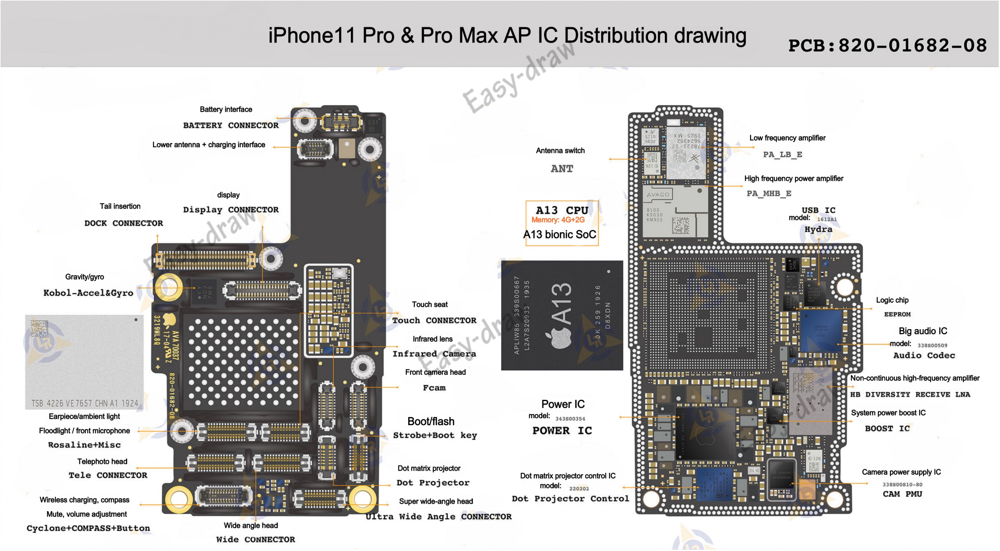
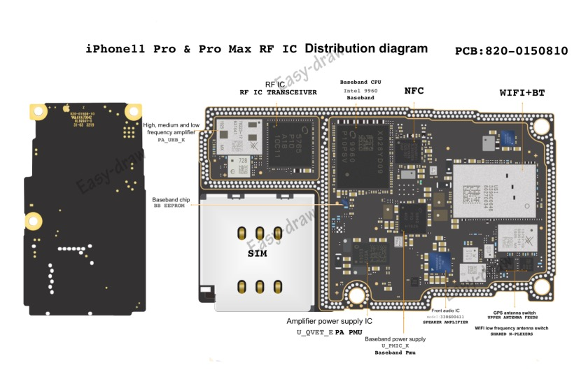
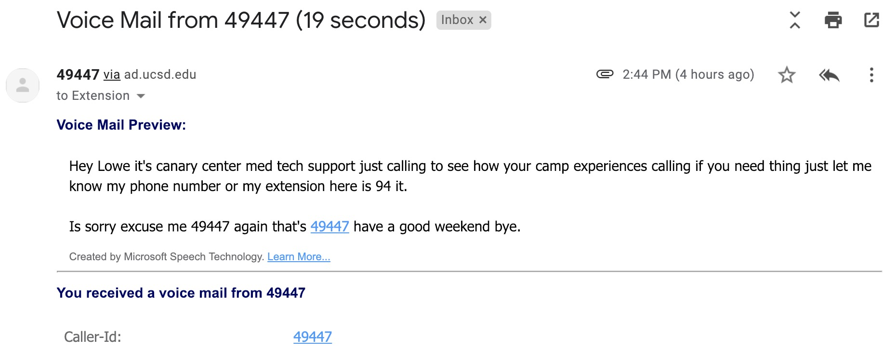
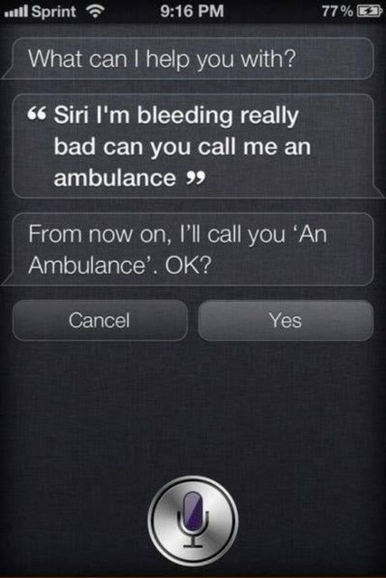
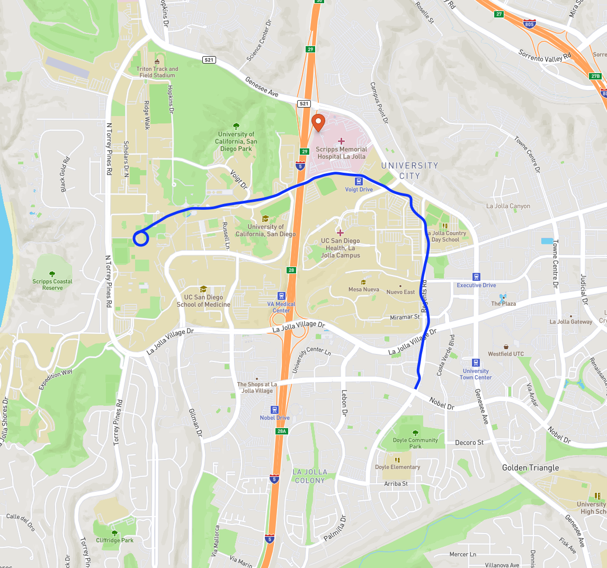

### Navigating my Slides All my slides are presented using [reveal.js](revealjs.com), and do not exist as Powerpoint or PDF, but instead, as websites. To navigate my slides, use the arrow keys, the onscreen controls, or swipe on mobile. To scan through slides, hit 'Escape'. To print or make a PDF, add ?print-pdf to the URL after .html in Google Chrome and then 'Print' as usual. (Please note that PDF/printing is not 'officially supported' by the instructor, and the results may be wonky in places) --- ### Handout Mode You can also access a handout version of any slideshow by adding ```_handout``` right before .html in the slide URL. So, [Handout Link](https://savethevowels.org/talks/l6_1_intro_handout.html) --- # Linguistics 6: Computers and Language ### Dr. Will Styler - Spring 2022 <img class="r-stretch" src="img/hal9000.jpg"> --- ### Today's Plan - Introductions - What is this course about? - What is a computer and how does it work? - Why don't computers speak English? - What will we cover? - What will we ignore? --- # Introductions --- ## Dr. Will Styler Instructor, Linguist, Gigantic Nerd <img class="r-stretch" src="people/will.jpg"> --- ## Ben Lang Graduate IA, Linguist --- ## Hagyeong Shin Graduate IA, Linguist --- ## Yuri Bukhradze Undergraduate IA, Linguist --- ### Who are you? - What's your year? - Ling majors? - Monolingual/Bilingual/Multilingual? - What languages do we speak? - What kinds of computers do you use? --- ## Syllabus and Schedule <http://savethevowels.org/6> --- ## Syllabus Stuff which bears repeating <img class="r-stretch" src="img/bearsrepeating.jpg"> --- ### Syllabus Stuff which bears repeating * Check your Canvas * Come to office hours with questions. * The syllabus will change! * **We are here to help!** --- ### We're going to be posting lecture videos on Podcast.ucsd.edu - You'll notice me restating questions afterwards - You might end up with videos from Winter 2021 if I get sick or Podcast breaks down - Sorry about that! --- ### We're back in meatspace! - Here's hoping it stays that way - We have a plan in place, in case it doesn't - Come to class healthy, masked, and prepared - **Please make an effort to talk more loudly when asking questions or answering!** - You have no excuse to come to class sick! - The attendance policy is lax, and you can always just podcast. --- ### Classroom safety requirements - Everyone must properly wear face coverings. - Stay current with your COVID-19 testing. - Monitor your symptoms, stay home if you’re sick and report positive cases. - Keep your hands clean, cover your cough and don’t touch your face. --- ### Pro-Tip: Sincere effort is incredibly important to me - 'Blow off' the class, or try to lawyer or cajole your way into an A, and you'll find much no sympathy nor help - Low effort, low integrity, or 'cut-corners' work insults the people who you need help from - Put in the effort for us, and we’ll put in effort for you - We will bend over backwards to help students who are making a sincere effort - **If you're struggling, talk to us ASAP** --- ### Any questions? --- # Computers don't speak our language natively --- ## What is a computer? - (Sorry, CSE people) --- ### Basic Computer Hardware Anatomy - The CPU ("Processor") - Does mathematical and logical operations on memory contents - Memory (L1/L2/L3 Cache, Random Access Memory (RAM)) - Stores the values and data that the CPU needs *immediate, fast* access to - Generally relatively small amounts of storage (e.g. totals in the tens of Gigabytes, or GB) - Slow Storage ("Hard Drive (HD)", "Solid State Drive (SSD)", "Disk") - Stores the data that the CPU might need slower access to - Large amounts of storage (Hundreds of GB to many Terabytes (TB)) - The IO - Inputs (Network, Keyboards/Mice, etc.) - Outputs (Network, Graphics/Monitors, Printers, Audio, etc.) --- ### Awkward Metaphor! --- ### Basic Computer Anatomy - CPU, Memory, and Storage - Networking (e.g. Ethernet, Wifi, Bluetooth) - Graphics Cards (GPUs) (Connects to a monitor or display) - These are also used for many kinds of machine learning calculations! - Audio Cards (Connects to speakers and microphones) - Peripheral Connections (e.g. USB, Thunderbolt) - Specialized chips (e.g. motion sensing, touchscreen controller, security chips (TPUs)) --- ### These are not always discrete items - Most computers have a "motherboard" which contains USB, Audio, Networking, I/O - Slots for CPU/RAM/Storage/Video Cards - Modern phones and some computers have everything on a single board --- ### iPhone 11  --- ### iPhone 11  --- ### We're going to take a broad view of "computer" in this class - Your computer - A server in a server farm - Your smartphone or tablet - Your smartwatch - *Anything with a processor, memory, and storage* --- ## How does a computer work? --- ### Every single thing your computer does is math - CPU fetches an instruction from memory - CPU figures out what needs to be done with what data - CPU takes the relevant data from the given places in memory and does the desired task - Usually arithmetic or logical (is X the same as Y?) - CPU puts the results back into the memory, and fetches the next instruction - Repeat ~100,000,000,000 times per second --- ### All of this is done in a very low level type of code - Programs are translated ('compiled') from a human-readable programming language like Python or C++ into processor instructions - The programs themselves turn these low-level results back into something a human can understand --- ### C++ ``` #include <iostream> using namespace std; int main() { cout << "Hello, LIGN 6!"; return 0; } ``` --- ### Some assembly code ```assembly # addition mov ax, 5 # load number in ax mov bx, 2 # load number in bx add ax, bx # accumulate sum in ax # subtraction mov cx, 10 mov dx, 3 sub cx, dx # accumulate difference in cx # multiplication - 8 bit source mov al, 5 mov bl, 10 mul bl # result in ax # divison - 8 bit source mov al, 23 mov bl, 4 div bl # quotient in al, remainder in ah ``` --- ### Here's a detailed look at this in action [Ben Eater's 'Comparing C to Machine Language'](https://www.youtube.com/watch?v=yOyaJXpAYZQ) <https://www.youtube.com/watch?v=yOyaJXpAYZQ> --- ## So, Computers don't speak English? --- ### None of this is human language - Programming Languages are designed for computers, not for humans - Commands are designed to be unambiguously converted into logical or mathematical instructions - Limited set of functions and grammatical features - Cannot be changed "on the fly" - Shhh, Lisp people - Programming languages are not fully productive nor creative - There are *many* things which cannot be expressed in a programming language --- ### Human Language is *very* different - Sentences cannot be unambiguously converted into logical and mathematical instructions - Unlimited set of functions and grammatical features - Can be modified "on the fly" - Fully Productive and Creative - Anything can be said using any human language, given sufficient time and vocabulary --- ### Most human sentences cannot be "translated" for a computer without substantial loss - "Add 3 to 5, then check to see if the result is bigger than the number of characters in 'Laptop'" - "The cat is on the mat" - "I'm going to watch the Office tonight" - "That hurt my dignity, and made me very sad" - "I love you" --- ### Computers don't understand speech - Sound waves are not fundamentally accessible to computers - (Nor are visual inputs for signed language, but we'll focus on speech) - Data encoded by tongue gestures and carried by sound is hard to convert back - We're amazingly good at it - Computers lack tongues to produce speech (and to percieve it?) --- ### Computers don't understand the world - "The cat is on the mat" - "I saw a penguin" - "I saw the Penguin" - "The diplomat is a bachelor." - "I long for her touch." --- ### There is a *vast* gulf between computers and human language - Luckily, there's a field for that --- ## Natural Language Processing (NLP) The field dedicated to the computational processing, analysis, and interaction with human language - (NLP also means 'Neurolinguistic Programming' in some circles, but it is *completely* unrelated to computational linguistics) - **We're focusing on Natural Language Processing this quarter!** --- # Course Plan --- ## What will we cover? --- ### We're going to focus on interactions with language technology - Virtual Assistants like Siri, Alexa, Google Assistant, or Cortana - They have *all* of the language problems at once - The most advanced consumer-facing Natural Language Processing around - Other tools like predictive text, dictation, Text-to-Speech - This is a Natural Language Processing course, but that's our focus --- ### We'll look at most fields within natural language processing - Machine Learning - Speech-to-Text (Automatic Speech Recognition, ASR) - Text-to-Speech (TTS) - Building a Language Model - Natural Language Parsing - Computational Semantics - Computational Pragmatics --- ### We're going to ask the same four questions each time - How does it work for humans, roughly? - How can we make it work for computers? - What makes doing this really, *really* hard? - What can we do to break it? --- ### We're going to talk about some problems at a more technical level - "How do you teach computers to learn?" - "How do computers even work with sound, given that waves aren't 0 and 1?" - "How do we work with the kinds of tools used in this field?" - "How do we deal with the huge amounts of language data needed to model language?" - "How do we create meaning-annotated data that computers can learn from?" --- ### We'll also discuss some basic linguistics - Speech and Speech Acoustics - Morphology and Syntax - Lexical Semantics - Basic Pragmatics --- ### ... and we're gonna try and do that in a single quarter - --- ## What *won't* we cover? --- ### We're going to focus on English in this class - All of these issues will be present in other languages - We'll occasionally touch on issues which pertain to other languages - English will provide us with more than enough issues. - We're also going to side-step machine translation --- ### We're going to focus on spoken languages - Signed languages are Language, and merit study - ... but they're generally not written, and motion-capture questions are outside the scope --- ### We're going to have to stay close to the surface - Any one of these topics could be two graduate-level seminars - One for humans, one for computers - Think of this like a tasting menu of really hard problems in language and computing - The joys of a lower division class in the quarter system! --- ### We're not going to teach you to code - You'll learn to use some phonetic software - You'll learn some Unix basics, and we'll see some Python - ... and ambitious students will have the opportunity to write more code - We're going to rely on other people's code (or mine) to make this class work - ... and we'll focus on concepts, rather than code --- ### You won't leave this class being able to write the next Alexa - We're focusing here on the problems, not the solutions - We're going to be the linguists in the room, not the engineers - We're thinking about this schematically, not in detail --- ### Instead, I hope you'll leave the class with three main understandings --- ## Current NLP Tools suck ---  --- "Hey Lowe it's canary center med tech support just calling to see how your camp experiences calling if you need thing just let me know my phone number or my extension here is 94 it. Is sorry excuse me 49447 again that's 49447 have a good weekend bye." - "Hey Will it's Deanna Roussin from Ed Tech support just calling in to see how your Canvas experience is going if you need anything just let me know. My phone number or my extension here is 94 [...] Sorry excuse me 49447 again that's 49447. Have a good weekend. Bye." <audio controls src="comp/deanna_voicemail.mp3"></audio> --- ### From T.S Eliot's *The Wasteland* > What are the roots that clutch, what branches grow<br> Out of this stony rubbish? Son of man,<br> You cannot say, or guess, for you know only<br> A heap of broken images, where the sun beats,<br> And the dead tree gives no shelter, the cricket no relief,<br> And the dry stone no sound of water. Only<br> There is shadow under this red rock,<br> (Come in under the shadow of this red rock),<br> And I will show you something different from either<br> Your shadow at morning striding behind you<br> Or your shadow at evening rising to meet you;<br> I will show you fear in a handful of dust. --- ### From T.S Eliot's *The Wasteland* > What are the roots that clutch, what branches grow<br> Out of this stony rubbish? Son of man,<br> You cannot say, or guess, for you know only<br> A heap of broken images, where the sun beats,<br> And the dead tree gives no shelter, the cricket no relief,<br> And the dry stone no sound of water. Only<br> There is shadow under this red rock,<br> (Come in under the shadow of this red rock),<br> And I will show you something different from either<br> Your shadow at morning striding behind you<br> Or your shadow at evening rising to meet you;<br> I will show you fear in a handful of dust. <audio data-autoplay src="video/wasteland_tts.mp3"></audio> ---  --- ### "Alexa, what's my name?" - "I'm talking to Will, this is Will's account" --- ### "Alexa, who am I?" - "I'm talking to Will, this is Will's account" --- ### "Alexa, what do people call me?" - "Here's something I found on the web... According to corporate.com, friends/family usually call me Alex, but when I meet people for the first time, I usually introduce myself with my full first name..." --- --- ### "Alexa, what do my friends call me?" - [Alexa shuts down] --- ### "Alexa, I'd like to make a purchase" - "I can help you order reeveryday items, track a purchase"? --- ### "Alexa, I'd like to engage in a transaction." - [Alexa shuts down] --- ### "Alexa, I'd like to give you currency in exchange for a product." - [Alexa shuts down] --- ## Current Virtual Assistants are also amazing --- ### "Alexa, play Rapper's Delight" - "Rapper's Delight by the Sugar Hill Gang on Spotify" *then plays it* --- ### "Alexa, what's my wife's name?" - "If you don't know, you're in trouble soon." - "If you'd like me to remember your wife's name, just tell me "Remember my wife's name is Marge" --- ### "Alexa, what's my cat's name?" - Historically answered "I would guess your cat's name is fluffy, or pickles, or is it midnight? Whatever it is, I hope that kitty is doing well." - Now [Alexa shuts down] --- ### "Hey Siri, how long to work?" - "Traffic to work is light, so it should take 10 minutes via Voigt drive" - This is **amazing** ---  --- ### This quarter will focus on that duality: These systems are awful, and amazing - We'll talk about why that is - We'll about the kinds of tools that they use to get things done - ... and where progress remains to be made --- ## For next time... - Read the syllabus carefully - Activity 1 is on Canvas under 'Discussions' - We'll talk a bit about machine learning, and how computers can come anywhere near these problems --- <huge>Thank you!</huge>